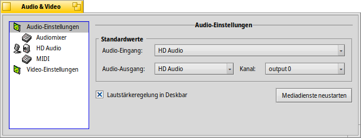
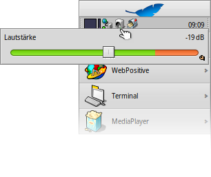
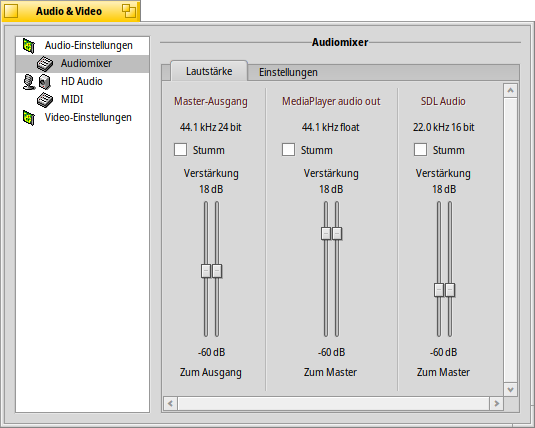
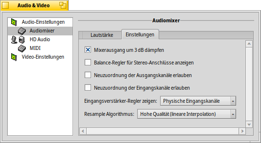
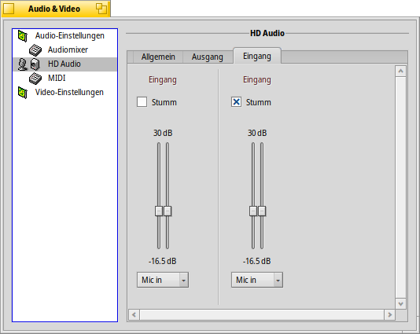
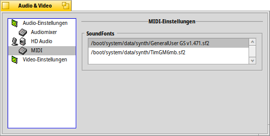
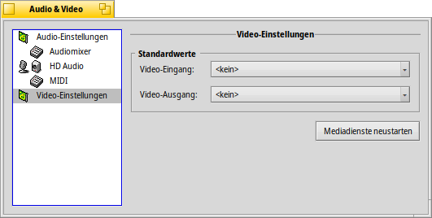

| Index |
|
Audio-Einstellungen Audiomixer HD Audio MIDI Video-Einstellungen |
 Audio & Video
Audio & Video
| Deskbar: | ||
| Ort: | /boot/system/preferences/Media | |
| Einstellungen: | ~/config/settings/Media/* ~/config/settings/System Audio Mixer ~/config/settings/MediaPrefs Settings - Speichert die Position des Programmfensters. |
Mit den "Audio & Video"-Einstellungen lassen sich eben diese im System steuern. Das geht vom oft genutzten Anpassen der Lautstärke bis zu recht hardware-nahen Optionen, die die meisten Nutzer wahrscheinlich nie brauchen werden. Die verschiedenen Einstellungsmöglichkeiten sind in Gruppen gegliedert.
 Audio-Einstellungen
Audio-Einstellungen

Befinden sich mehrere Audio-Schnittstellen im Rechner, lässt sich einstellen, welcher , und welcher benutzt werden soll. Sollte mal etwas mit Audio/Video im System schief laufen, kann man es mit probieren.
Aktiviert man erscheint ein entsprechendes Icon im Tray der Deskbar.
Ein Linksklick darauf blendet einen Schieberegler ein, der die Lautstärke des Master-Ausgangs steuert. Alternativ lässt sich die Lautstärke auch direkt per Mausrad auf dem Icon ändern. Wie man an dem kleinen Replikant-Symbol unten rechts erkennt, kann der Schieberegler beispielsweise auch auf dem Desktop eingebettet werden.
Ein Rechtsklick öffnet ein Menü für den Schnellzugrff auf die Einstellungspanels von und , außerdem kann man den .
Audiomixer
Mit dem Audiomixer können die Lautstärken der vorhandenen Audio-Streams gesteuert werden, beispielsweise die Audioausgabe der gerade laufenden Programme.
Hier sehen wir den "Master-Ausgang" und die Lautstärkeregler des gerade laufenden MediaPlayers und eines Spiels das 'SDL Audio" nutzt. Mit diesen Reglern lassen sich die einzelnen Audioausgaben so mixen, dass z. B. der Sound des Spiels nicht die Musik übertönt, die von MediaPlayers Playliste kommt.
Die 'Doppelknöpfe' der Schieberegler repräsentieren Links/Rechts eines Stereosignals. Sie bewegen sich normalerweise gemeinsam, benutzt man jedoch die rechte Maustaste, können sie einzeln bewegt und so die Balance geändert werden.
Ein Häkchen bei schaltet die Ausgabe des Streams ganz ab.
Unter dem Reiter befinden sich die zumeist hardware-nahe Optionen:
Unter all diesen low-level Parametern — mit denen man wahrscheinlich nur experimentiert, falls Haiku die eigene Audio-Hardware nicht schon mit den Standardwerten unterstützt — gibt ein paar eventuell interessante Optionen.
| gewährt etwas mehr Spielraum, um 'Clipping' zu vermeiden. | ||
| zeigt Balanceregler unter den Lautstärkereglern im Reiter anstatt der 'Doppelknöpfe'. | ||
| zeigt weitere Reiter, in denen ein Kanal einem oder mehreren anderen Kanälen zugeordnet und deren Lautstärke angepasst werden können. Beispielsweise lässt sich der linke Ausgabekanal auf vorn-links, hinten-links und Mitte aufteilen und jeweils unterschiedliche Lautstärken zuweisen. | ||
| hat Optionen für (geringe CPU-Auslastung und Latenz) und (etwas höhere CPU-Auslastung und Latenz). |
HD Audio (Benennung ist abhängig von der Hardware)
Während der Audiomixer die verschiedenen Audio-Streams im System steuert, werden hier die physischen Ein/Ausgaben konfiguriert.
Es gibt drei Reiter:
| konfiguriert die und . | ||
| steuert die Ausgangslautstärke von Lautsprecher und Kopfhörer. | ||
| steuert die Eingangslautstärke für Line-in und Mikrofon. |
Zugegebenermaßen kann die Lautstärkeregelung der Hardware etwas chaotisch erscheinen...
Haiku fragt die Hardware ab und versucht das Beste aus dem zu machen, was zurückkommt. Beispielsweise können dabei manchmal Regler mit derselben Beschriftung mehrmals erscheinen. Da muss man dann etwas experimentieren bis man den Richtigen findet.
MIDI
Die MIDI-Einstellungen zeigen alle installierten SoundFonts (Sammlungen von Instrumentendefinitionen). Aus der Liste einfach den auswählen, der verwendet werden soll. Ein Doppelklick auf einen SoundFont öffnet dessen Ordner.
Einige SoundFonts finden sich in HaikuDepot; sie erscheinen nach der Installation automatisch in der Liste. Selbst aus dem Web heruntergeladene SoundFonts müssen erst von Hand nach /boot/system/non-packaged/data/synth/ verschoben werden (oder dem entsprechenden Ort in der Home-Hierarchie, siehe Kapitel Dateisystem Layout).
Video-Einstellungen

Je nach verwendeter Hardware und Treiberunterstützung, lässt sich hier
and wählen.
Wie bei den Audio-Einstellungen kann man probieren per eventuelle Probleme zu beheben.